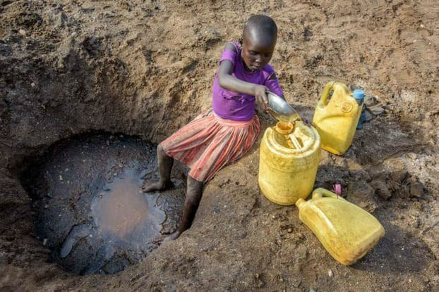
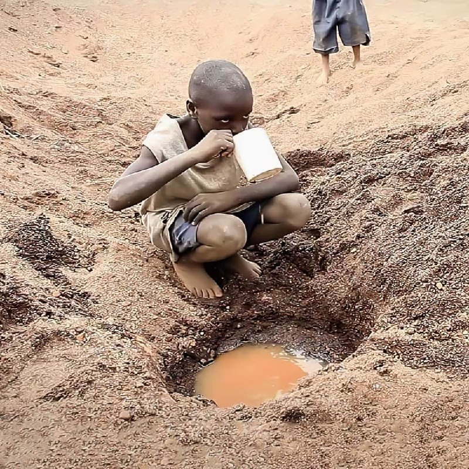
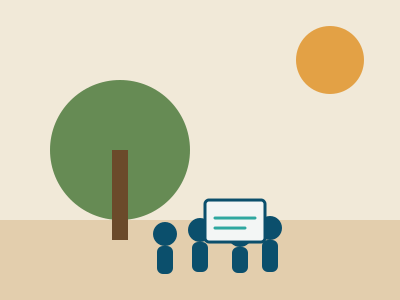
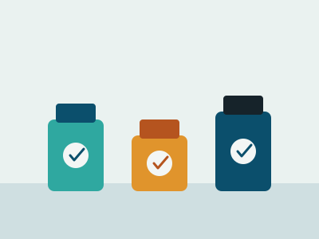
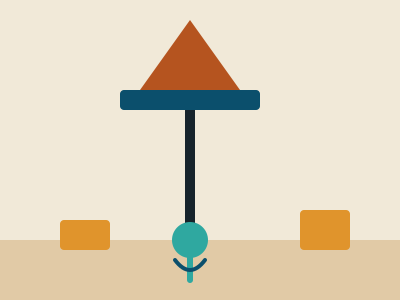
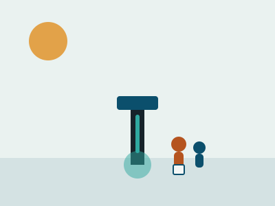

Community Health Workshops
On-the-ground sessions teaching safe water handling, hygiene, sanitation, and early symptom recognition for cholera, typhoid, and dysentery.
Our Mission & Impact
To safeguard the health and dignity of underprivileged rural communities across Africa by ensuring universal access to safe, quality drinking water — through education, innovation, and collaborative action.
Where Thirst Meets Purpose
The Challenge
An estimated one in three people across sub-Saharan Africa still lack access to safe drinking water, and rural communities bear this burden disproportionately. Women and children often walk hours daily to fetch water drawn from sources contaminated by agricultural runoff, human waste, or stagnant dam systems — fueling preventable disease that undermines decades of progress in child health, education, and economic development.
The Opportunity
Africa holds significant untapped groundwater reserves, a growing network of NGOs and development financiers willing to invest in water infrastructure, and increasingly connected rural populations eager for practical health knowledge. Low-cost purification technology paired with borehole engineering and community education makes meaningful change achievable within years, not generations.

The Little Girl and the untreated water
The Little Girl and Muddy Water The Change We Want to See
The Change We Want to See
 The Change We Want to See
The Change We Want to See
Global Challenge, Global Opportunity
This mission is directly anchored in four United Nations Sustainable Development Goals (SDGs).
Reducing preventable water-borne disease.
Expanding sustainable safe-water access.
Freeing time and income lost to illness.
Freeing women and girls from water-fetching burdens.
From Awareness to Action
On-the-ground sessions teaching safe water handling, hygiene, sanitation, and early symptom recognition for cholera, typhoid, and dysentery.
Portable purification kits reach households drawing from unprotected dams, rivers, and open wells — an immediate safeguard.
Lobbying NGOs, financiers, and local government to fund mechanized boreholes as lasting, sustainable water sources.
Local volunteers trained to monitor water quality and maintain infrastructure long after our teams move to the next village.
In the Field

Community Health Workshop
Treatment Kit Distribution
Mechanized Borehole Drilling
Safe Water, Every DayRooted Where We Stand
From a single district to a multi-region network — the road from founding to our five-year target.
Aqua Vitae launches its first health workshops and kit distribution pilot in a single rural district.
Our first mechanized borehole partnership begins, alongside expanded workshop coverage.
Active programs now run across our founding region, with over 1,200 families reached to date.
Programs extend into two neighboring regions, prioritizing the highest-need, least-served areas.
Multiple borehole partnerships mature; treatment kits shift from primary solution to emergency backup.
7 in 10 families across our served rural communities have reliable access to quality drinking water.
Rooted Where We Stand, Reaching Where We're Needed
Rural districts of our founding region, where workshops and kit distribution run on a rolling monthly schedule.
Our first mechanized borehole partnership is in the construction phase, with a second in planning.
Two neighboring regions are prioritized for 2027–28 based on documented water-borne illness rates.
We work alongside local NGOs, community health volunteers, and regional development agencies.
Seven in Ten, Ten in Time
Not an abstract aspiration, but a measurable target: treatment kits provide immediate relief, boreholes provide lasting infrastructure, and education ensures both are used effectively and sustained by the community itself.
rural families with reliable, quality drinking water access by 2031